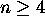
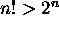
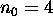
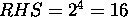
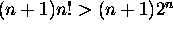
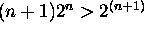
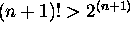

Induction
Problem: For every  ,  .
Proof:
In this problem  .
Basis Step: If n = 4, then LHS = 4! = 24, and  .
Hence LHS > RHS .
Induction: Assume that
for an arbitrary . -- Induction Hypothesis
To prove that this inequality holds for n+1, first try to express LHS for n+1 in terms of LHS
for n and try to use the induction hypothesis.
Note here (n + 1)! = (n + 1) n!.
Thus using the induction hypothesis, we get (n + 1)! =
 .
Since , (n+1) > 2.
Hence  .
Hence  .
End of Proof.